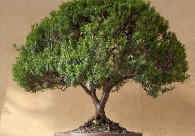
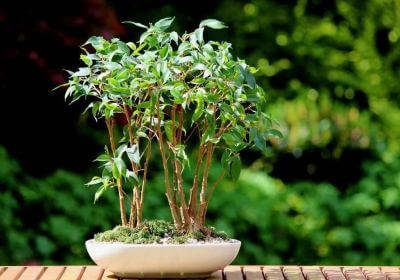

Деревья и Кустарники
Комнатные деревья и кустарники – некапризные и красивые растения, которые может содержать у себя в доме каждый.
Создавая «домашний сад», необходимо учитывать рекомендации по уходу за каждым видом дерева или кустарника, которые могут резко отличаться друг от друга.
Как часто нужно поливать?
Все зависит от вида комнатного растения, температуры и влажности в помещении. Влаголюбивыми, к примеру, считаются фикусовые и цитрусовые деревья, а также деревья вида бонсай. Все эти разновидности растений желательно держать в кадках с гравием, хорошо удерживающим влагу. Кроме того, интенсивный полив рекомендован кофейным деверьям. А вот пальмы – наоборот, можно поливать всего 1 раз в неделю.
Также учитывайте, что вода, обогащенная минералами, может оказаться губительной для некоторых видов комнатных деревьев и кустарников, особенно, экзотических.
Надо ли подкармливать?
Частота и тип подкормки для домашних деревьев и кустарников зависит от конкретных требований, предъявляемых каждым их видом.
Например, фикусовые деревья достаточно подкармливать раз в месяц, используя для этого стандартные удобрения для комнатных растений. Для цитрусовых деревьев рекомендованная частота подкормки – раз в 3-4 недели. Для этого отлично подойдут удобрения для цветущих комнатных растений.
Для драцен и кофейных деревьев идеальны удобрения пролонгированного действия. Подкармливать их лучше всего весной.
Рекомендации по пересадке
Каждая разновидность домашних растений имеет свои требования по пересадке. Правильная и своевременная пересадка продлевает жизнь комнатному растению,
защищает его от увядания и гибели. Чем больше места в горшке, тем лучше развивается корневая система. Однако избыток грунта также влечет за собой определенные последствия,
создавая свободное пространство для застоя влаги и образования плесени. Общие рекомендации по частоте пересадки:
-в первые 1-3 года с момента посадки растения пересаживать его нужно не чаще, чем 2 раза в год; -по истечении этого срока надо ориентироваться по интенсивности роста
дерева или кустарника, выполняя пересадку примерно раз в 3-5 лет.
Общие советы по уходу
Многообразие комнатных деревьев и кустарников не дает обобщенно описать требования по уходу за ними. Но, как с другими домашними растениями,
несколько общих рекомендаций выделить все же можно:
-расставляя деревья и кустарники в доме или квартире, следует избегать сквозняков; -даже светолюбивым растениям противопоказаны прямые солнечные лучи,
способные оставлять на их листьях ожоги и приводить к быстрому высыханию грунта;
-избыток влаги противопоказан даже влаголюбивым деревьям и кустарникам, поскольку он повышает риск гниения корней и образования плесени;
-все растения нуждаются в регулярном очищении листьев от скопившейся пыли и грязи.